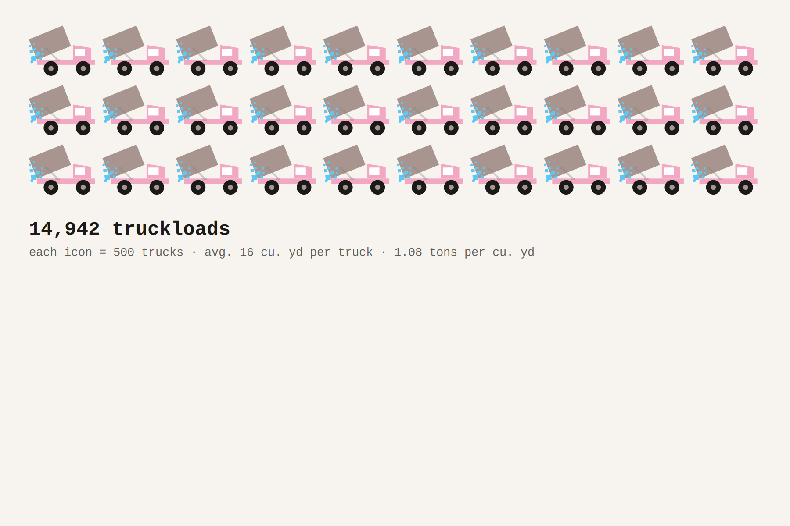

A decade of data shows the city is using more salt, especially the 2025–2026 season
The NYC Department of Sanitation measures truck loads by volume rather than weight, with each standard salt spreader holding roughly 16 cubic yards. Each truck icon in the pictograms below represents 500 truckloads. Icon counts are rounded to the nearest whole icon.
Here is how the city's salt use has stacked up over the past decade:

Data source. Salt usage data comes from the NYC Department of Sanitation (DSNY) Salt Usage dataset, published on NYC Open Data. The dataset was fetched directly via the Socrata API and covers 224 storm-level records from 2015–2016 through 2025–2026. Historical data as early as 1989 were provided by the department via email.
Defining winter seasons. Each record in the dataset carries a date. The key cleaning decision was how to assign dates that fall in late spring to the correct winter season, specifically one April storm. Following guidance from DSNY's research team, the rule applied was: storms occurring in January through April are assigned to the season that started the prior October. This corrects an error in an earlier version of this analysis, in which an April 4, 2018 storm (13,666 tons) was incorrectly assigned to 2018–19 instead of 2017–18.
Truckload calculations. Truckloads were calculated using conversion parameters provided by the DSNY research team, who noted that DSNY measures salt by volume, not weight:
DSNY also operates larger "flow-and-dump" trucks (~17 cu. yd) and smaller Haulster pick-up trucks (~2.5–4 cu. yd). The truckload figures in this story use the standard spreader as the unit for consistency. Truckload counts are estimates.
Data verification. Season totals were submitted to DSNY's research team for verification in June 2026. The team confirmed that all season totals are correct, with the exception of the corrected 2017–18 and 2018–19 figures noted above. The team also noted that salt use is not a direct reflection of snowfall inches — variation depends on precipitation type, temperature, sunlight, and the spacing between storms.
Pictogram icons. Each truck icon in the pictograms represents 500 truckloads. Icon counts are rounded to the nearest whole icon. The truck illustration was drawn by the author in Adobe Illustrator.